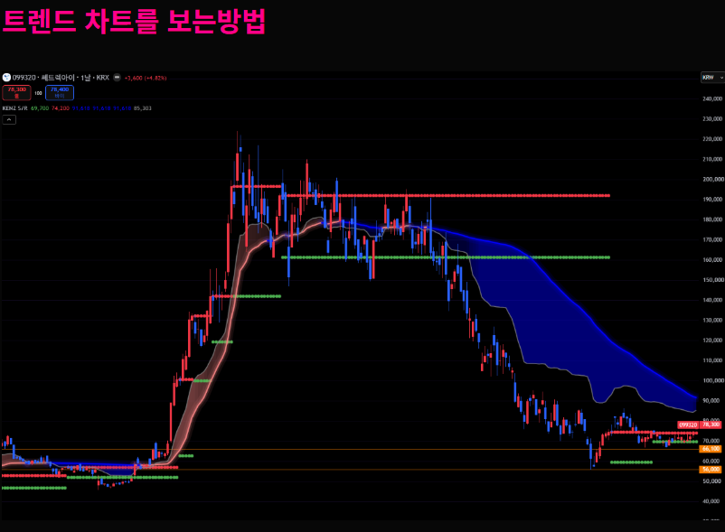
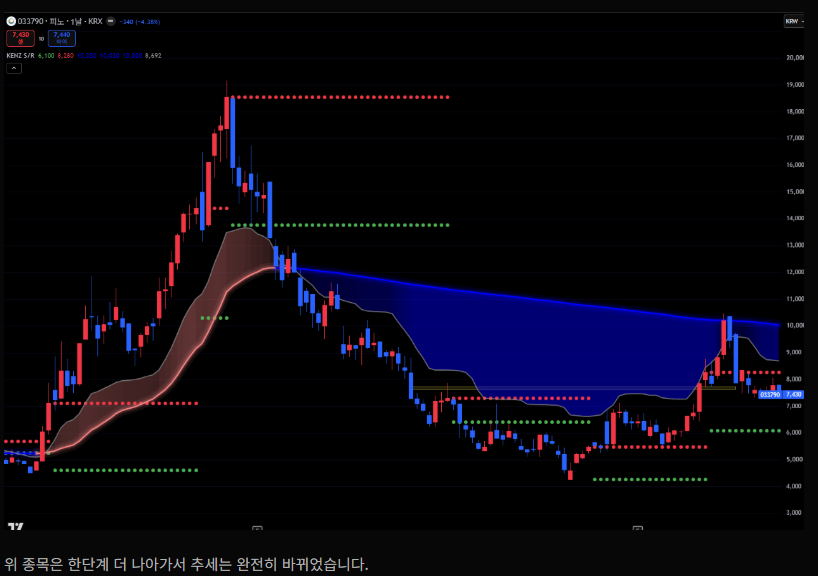
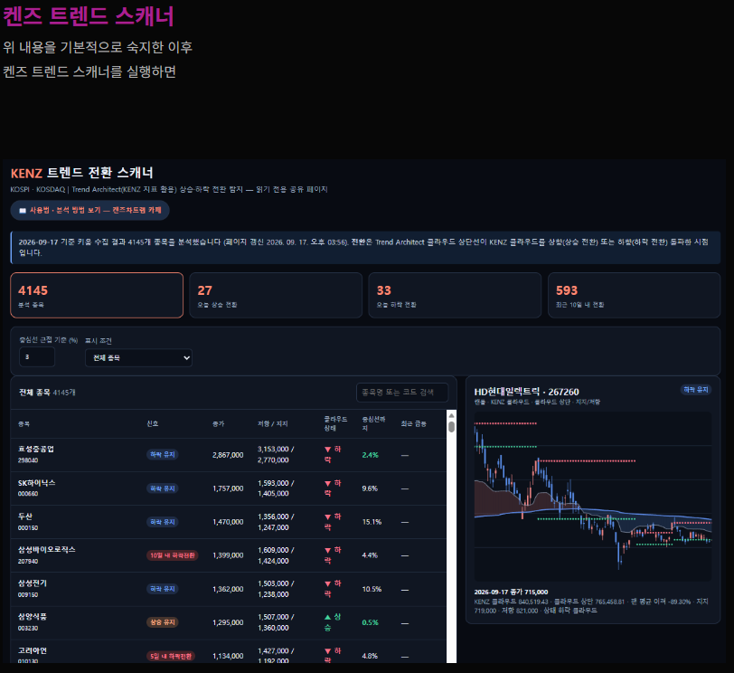
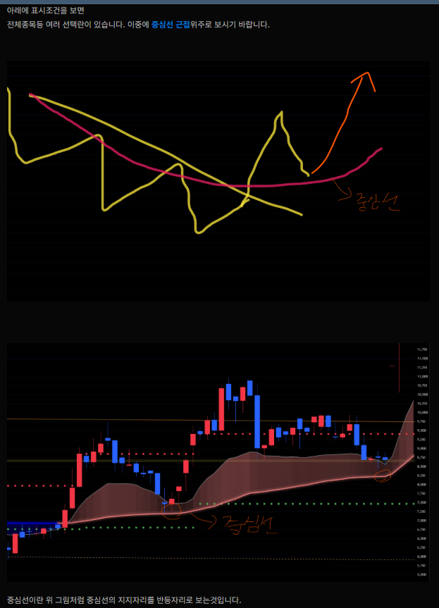
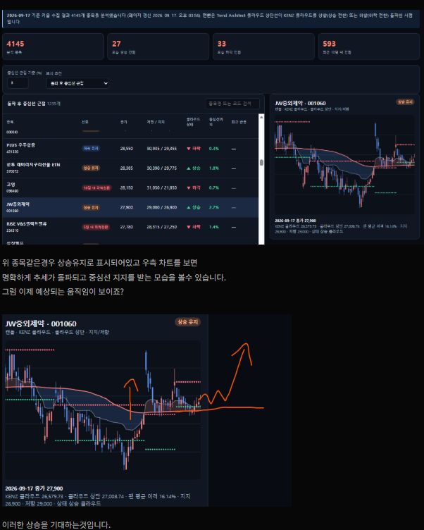
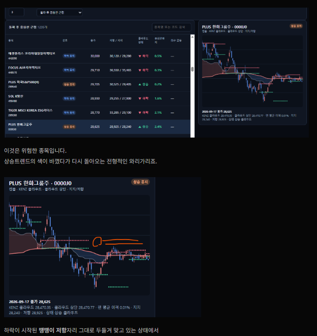
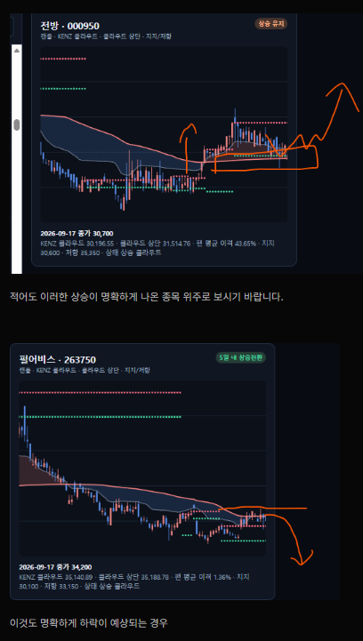
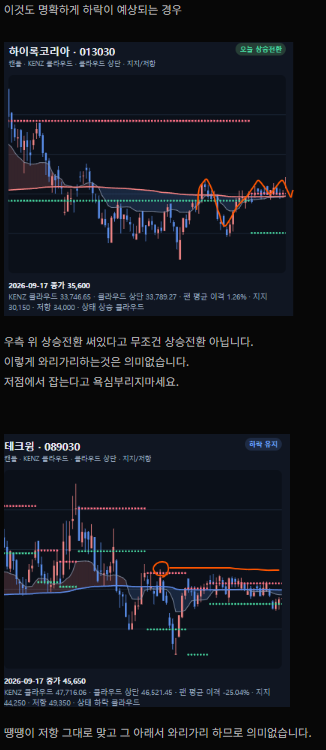
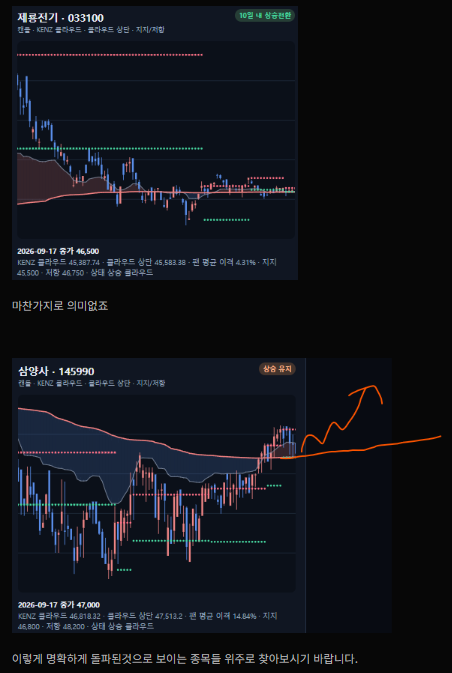

KENZ 트렌드 전환 스캐너란
KENZ 트렌드 전환 스캐너의 기본 목적은 종목의 현재 추세를 파악하는 것입니다.
모든 종목은 상승추세와 하락추세를 반복하며 움직입니다. 주가가 상승하기 위해서는 무엇보다 상승추세가 형성되어 있는지를 확인하는 것이 중요합니다. 하지만 초보 투자자의 경우 기업의 실적이나 재무상태가 좋다는 이유만으로 매수한 뒤, 추세가 이미 하락하거나 죽어 있는 상태에서도 계속 보유하는 경우가 있습니다.
좋은 기업이라고 해서 주가가 항상 상승하는 것은 아닙니다. KENZ 트렌드 전환 스캐너는 이러한 문제를 쉽게 확인할 수 있도록 현재 상승추세인지, 하락추세인지, 그리고 추세가 전환되고 있는지를 빠르게 파악하기 위한 목적으로 개발되었습니다.
또한 이 지표는 켄즈차트랩만의 고유한 차트 이론과 추세 철학을 바탕으로 최대한 유사하게 구현한 지표입니다. 켄즈차트랩의 기본적인 추세 철학은 간단합니다.
"절대 저가에 주식을 매수하려 하지 마라.
비싸게 사더라도 추세가 돌파된 이후에 매수하라."
아직 하락추세에 있는 종목을 단순히 가격이 싸다는 이유로 매수하는 것이 아니라, 추세가 전환되고 돌파가 확인된 이후 상승추세에 올라타는 것을 중요하게 봅니다.
켄즈차트랩이 추구하는 '추세를 확인하고, 추세가 전환된 이후 대응한다'는 관점을 기반으로 개발된 스캐너입니다.
트렌드 차트를 보는 방법

이렇게 명확하게 나온 종목은 드물긴 하지만 이 지표 기준으로도 충분히 이런 종목을 찾을 수 있습니다. 저점에서 트렌드가 시작되어 계속 상승하는 구간(빨간 바탕의 추세)이 이어지다가, 고점영역에서 트렌드가 파란색으로 바뀌면 주가는 계속 하락합니다.

추세가 완전히 바뀐 뒤 파란색 중심선에 닿았다가 또다시 하락하는 경우도 있습니다. 이것은 반등을 위한 상승이 아니라 데드캣 바운스, 즉 기술적 반등에 불과하다는 뜻입니다. 이런 걸 모르는 초보자들은 "이게 추세 전환한 상승일까" 하면서 매수하다가 모두 물립니다. 켄즈 트렌드 스캐너는 이런 종목들을 명확하게 잡아줍니다.
켄즈 트렌드 스캐너 사용법
위 내용을 기본적으로 숙지한 이후 켄즈 트렌드 스캐너를 실행하면, 상단에 데이터 갱신 시각이 표시됩니다 (실시간 조회가 아니라 주기적으로 갱신되는 스냅샷입니다).

아래 표시조건을 보면 전체종목 등 여러 선택란이 있습니다. 이 중에서 돌파 후 중심선 근접 위주로 보시기 바랍니다.

중심선이란 중심선의 지지자리를 반등자리로 보는 것입니다. 상승으로 전환되었고 중심선까지 내려온다면 높은 확률로 지지저점이라는 이야기가 됩니다.

상승유지로 표시되어 있고 차트에서 명확하게 추세가 돌파되고 중심선 지지를 받는 모습이 보인다면, 이후 돌파 후 눌림 자리에서의 상승을 기대할 수 있습니다 — 주식 차트분석의 기본 패턴입니다.
주의해야 할 패턴 (위험 신호)
상승트렌드의 색이 바뀌었다가 다시 돌아오는 전형적인 "와리가리"는 위험한 패턴입니다. 하락이 시작된 저항 자리를 그대로 두들겨 맞고 있는 상태에서는 트렌드 색 변화 자체가 의미 없습니다.

적어도 이러한 상승이 명확하게 나온 종목 위주로 보시기 바랍니다. 아래처럼 하락이 명확하게 예상되는 경우도 미리 피할 수 있습니다.

우측에 "상승전환"이라고 표시되어 있다고 해서 무조건 상승전환은 아닙니다. 이렇게 와리가리하는 것은 의미가 없으니, 저점에서 잡는다고 욕심부리지 마세요. 저항 자리를 그대로 맞고 그 아래서 와리가리하는 종목도 마찬가지로 의미가 없습니다.

이렇게 명확하게 돌파된 것으로 보이는 종목 위주로 찾아보시기 바랍니다.
